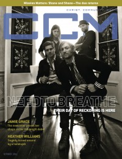

CCM Digital
Oct 2011
| Cover |
|---|
|  |
 Online Exclusively Online Exclusively |
| Writers in this Issue |
| Andy Argyrakis Grace S. Aspinwall Matt Conner Clay Crosse Andrew Greer Emily Hoernschemeyer Tom Jackson Caroline Lusk Rachel Shaver Steve Siler Derek Webb |
NeedToBreathe
Cover Feature:- "Settling Up: for NeedToBreathe, the day of reckoning is here" by Matt Conner
- "Grace & Rhythm" by Emily Hoernschemeyer
- "Songs from the Center" by Matt Conner
- "Time Passages" by Caroline Lusk
Worship:
- "A Righteous Response" by Caroline Lusk
- "I Look to You"
- Jawn Murray by Andrew Greer
- Smokie Norful
- Satellites & Sirens by Matt Conner
- Run Kid Run by Andy Argyrakis
- Lindsay McCaul by Andy Argyrakis
- Jason Crabb by Andy Argyrakis
- "What is Most Important" by Steve Siler
- Jason Crabb by Andrew Greer
- Jason Crabb by Andrew Greer
- "A Little Risky" by Tom Jackson
Reviews & New Releases:
- Phil Wickham - Response by Matt Conner
- Jason Crabb - The Song Lives On by Andy Argyrakis
- Travis Cottrell - When the Stars Burn Down by Andrew Greer
- The City Harmonic - I Have A Dream (It Feels Like Home) by Grace S. Aspinwall
- Casting Crowns - Come to the Well by Grace S. Aspinwall
- Sara Groves - Invisible Empires by Andrew Greer
- Shane & Shane - The One You Need by Andrew Greer
- Jason Gray - A Way To See In The Dark by Andy Argyrakis
- Rush of Fools - We Once Were by Grace S. Aspinwall
- Relient K - K is for Karaoke by Andy Argyrakis
- Run Kid Run - Patterns by Andy Argyrakis
- Ping - Peanut Gallery EP by Andy Argyrakis
- Over the Ocean - Paper House by Matt Conner
- The Make - This Box by Matt Conner
- Da' T.R.U.T.H. - The Whole Truth by Andrew Greer
- Donald Lawrence - YRM [Your Righteous Mind] by Andrew Greer
- Le'andria Johnson - The Awakening of Le'Andria Johnson by Andrew Greer
- The Hawk In Paris - His + Hers by Matt Conner
- Russ Taff - Faroe Islands by Andy Argyrakis
- My Brightest Diamond - All Things Will Unwind by Matt Conner
- "Speak Now Tour, Allstate Arena, Rosemont, IL" by Andy Argyrakis
- "Line 7: "Lead Us Not Into Temptation But Deliver Us From Evil"" by Derek Webb, Rachel Shaver
- "Text Talk" by Clay Crosse, Renee Cross
- "For Every Need" by Caroline Lusk
© 2011 CMnexus. Last updated August 2025. Contact: editor -AT- cmnexus -DØT- org